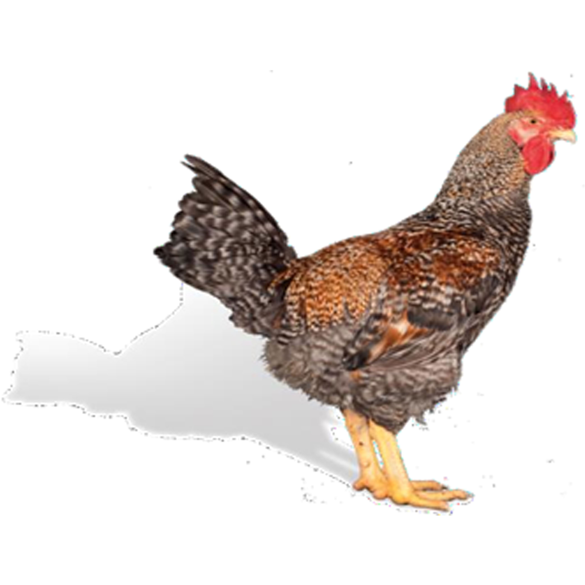
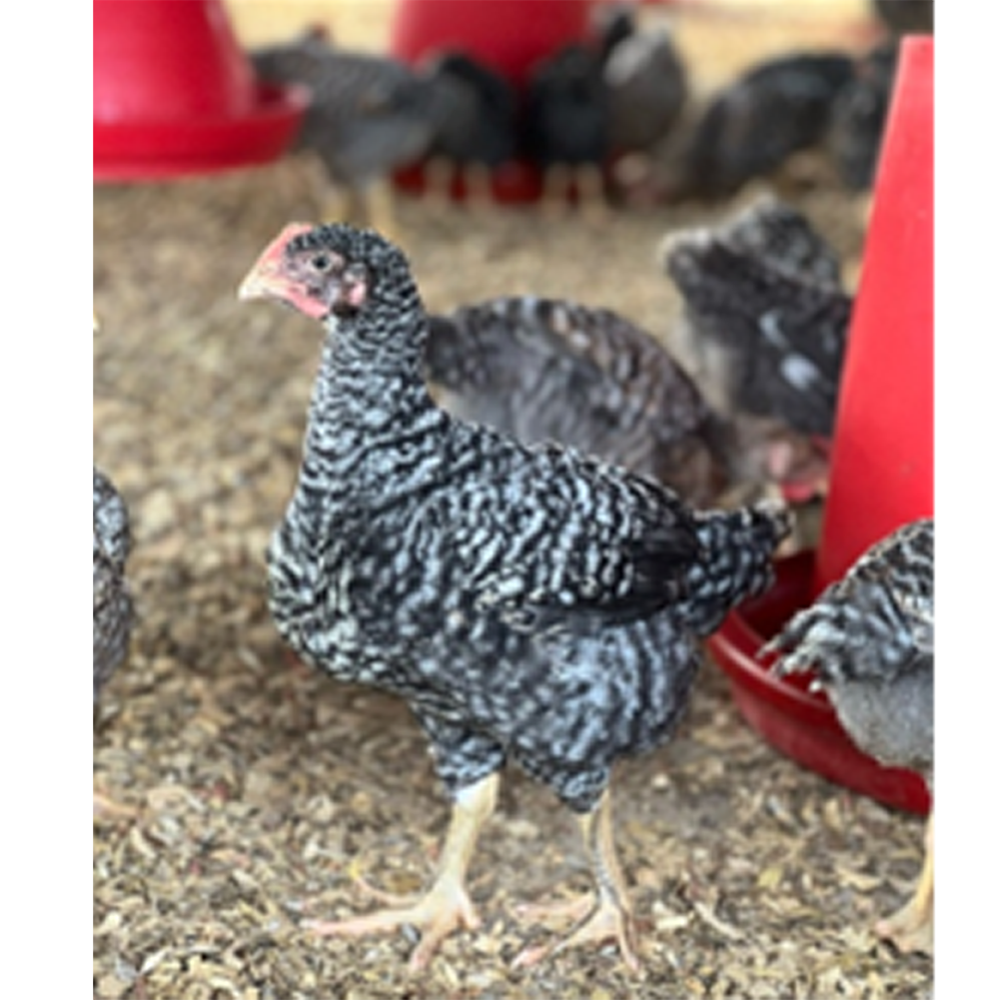
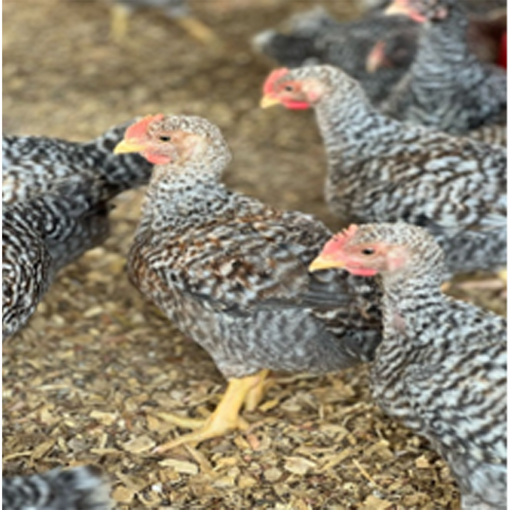
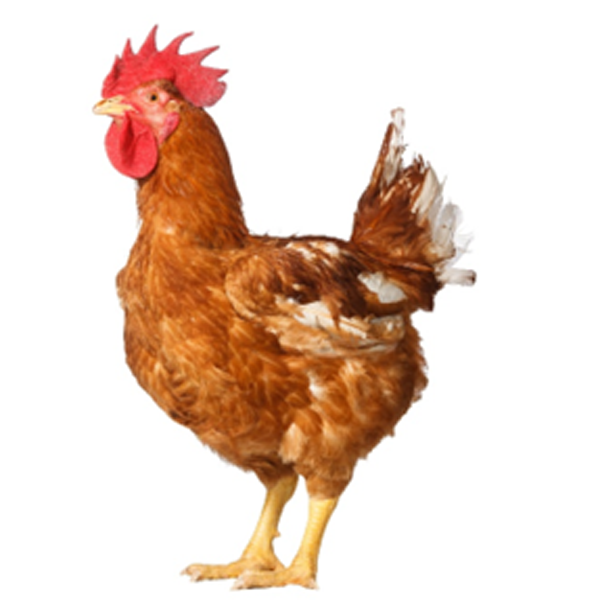
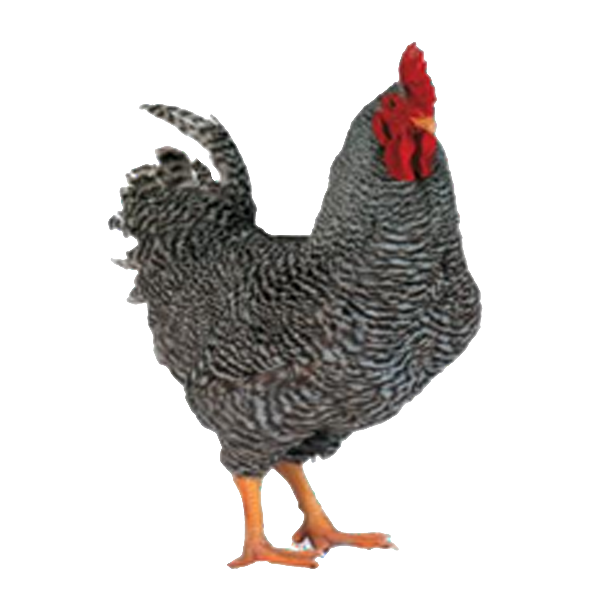
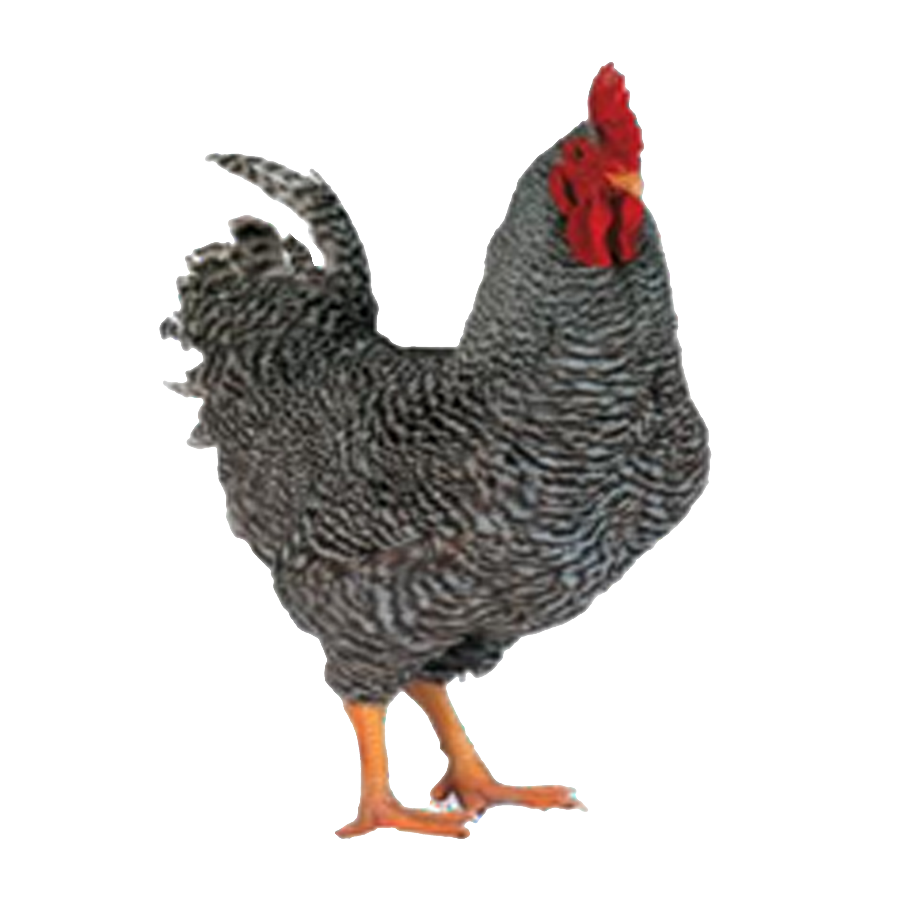

Empowering Smallholder Farmers
Through the CHICKEN4U project, WAFAD delivers dual-purpose chicks, quality feed, technical support, and market access to rural farmers, fostering self-sufficiency and boosting rural incomes.
Grow food. Earn Income. Changing lives.
WAFAD GROUP is a fast-rising, fully integrated agribusiness enterprise that is redefining poultry production and agricultural development across Ghana and West Africa. Established in 2009, WAFAD was born from a bold vision to transform agriculture through innovation, inclusivity, and grassroots empowerment.
The company’s journey began in the most modest of settings, strategic planning from a single room, operations carried in a backpack office, and production launched on a rented, abandoned farm. In its early years, the founding team often walked long distances to engage clients and stakeholders, navigating limited resources and widespread skepticism. Many dealers and distributors dismissed the company’s efforts, perceiving a lack of means as a lack of potential. But beneath the surface was a powerful force: a mission-driven team determined to build a transformative agribusiness that put farmers at the center.
From those humble beginnings, WAFAD GROUP has steadily evolved into a respected force in Ghana’s agricultural sector. The company’s integrated operations continue to develop and expand with the unwavering commitment of its dedicated team.
Today, WAFAD manages a growing network of:
In 2019, WAFAD introduced dual-purpose poultry breeds to the Ghanaian market—birds that provide both meat and eggs. This innovation unlocked new opportunities for rural farmers and catalyzed the creation of CHICKEN4U, WAFAD’s flagship farmer empowerment model.
CHICKEN4U is not just a product line. It is a rural transformation platform that supports women and youth in underserved communities with high-quality chicks, starter input kits, hands-on training, technical assistance, and guaranteed market access. Through the development of decentralized mother units, access to teen birds, and strengthened rural market systems, the model creates livelihoods, enhances household nutrition, and stimulates local economies.
WAFAD’s approach is built on practical innovation, strategic execution, and a deep commitment to inclusive agricultural growth. At its core is the belief that sustainable national development begins with thriving smallholder farmers.
Today, WAFAD GROUP continues to scale its operations and impact, leveraging strategic partnerships, local expertise, and a passionate workforce. With its eyes set on becoming a regional leader in integrated poultry production, the company remains grounded in its founding mission: to empower farmers, elevate rural communities, and build a stronger, more resilient agricultural future for Ghana and beyond.
To revolutionize agriculture in Ghana by delivering high-quality products, innovative solutions, and unwavering support to farmers, processors, and stakeholders, fostering sustainable growth and food security across the country.
To be the foremost agribusiness leader in West Africa, driving innovation, empowering communities, and building a resilient agricultural ecosystem.
 Quality
Quality Innovation
Innovation Reliability
ReliabilityThrough the CHICKEN4U project, WAFAD delivers dual-purpose chicks, quality feed, technical support, and market access to rural farmers, fostering self-sufficiency and boosting rural incomes.
Equipping farmers, youth, and women with practical skills, digital tools, and entrepreneurship opportunities to drive agricultural transformation across Ghana and the wider region.
Combining modern technology with localized approaches to ensure resilience, scalability, and sustainability in rural agricultural practices.
Supporting climate-smart agriculture, animal welfare, and environmental stewardship throughout our operations and outreach programs.
Producing scientifically formulated poultry feed to support healthy growth, maximize performance, and ensure food security.
Specialized in producing high-quality dual-purpose chicks (Ranger breed) adapted to African rural environments.
Fully automated incubation and hatching systems to supply high quality day-old chicks to farmers and partners across Ghana.
Comprehensive training programs targeting youth, women, and smallholder farmers to build skills in poultry production, feed manufacturing, hatchery management, and agribusiness entrepreneurship.
MOUs are trained farmers who brood 350–2000-day old RANGER chicks over 4-5 weeks providing optimal heat, feed, water and healthcare to ensure and chick survival and growth. They fully finance their operations by purchasing fully vaccinated chicks, feed and field vaccine at subsidized prices. After brooding, MOUs sell healthy 4–5-week teen RANGER to smallholder farmers, building sustainable and profitable production cycles. Through this models, MOUs generate income, improve household nutrition and steadily lift themselves out of poverty. By strengthen their economic resilience they transform their lives and contribute to healthier, more prosperous rural communities.
Showroom, Veterinary Shop, and Laboratories Offering accessible veterinary services, poultry equipment, vaccines, feed supplements, and laboratory diagnostics to strengthen farm productivity and health.
The ‘CHICKEN4U’ project contributes to the following key development goals and outcomes in our communities:


WAFAD offers a carefully selected range of conventional poultry breeds designed to meet farmer needs across egg, meat, and dual-purpose production systems. By partnering with leading global genetics companies, we deliver birds that combine world-class performance with local adaptability, ensuring farmers achieve productivity, resilience, and profitability.
Commercial Layers: trusted layer lines producing high-quality eggs with strong persistence.
Broilers: fast-growing, efficient meat birds for commercial and smallholder farmers.
Dual-Purpose Breeds: versatile birds providing both eggs and meat, ideal for rural and small-scale farmers.
With WAFAD Conventional Breeds, every farmer can find the right poultry line to match their goals, market, and production system.
WAFAD provides a comprehensive portfolio of products and services designed to meet the diverse needs of farmers, cooperatives, and agribusinesses. Our offerings combine globally trusted genetics, high-quality feed, advanced feed additives, and professional technical services ensuring productivity, resilience, and profitability across the poultry value chain.
1. Commercial Layer Breeds
Commercial Layers (Novogen Novobrown & Novowhite) trusted layer lines producing high-quality eggs with strong persistence.
The Hubbard Efficiency Plus is a leading broiler line bred for fast growth, outstanding feed conversion, and high meat yield.
Provides excellent carcass quality with strong breast meat proportion. Performs well under varied management conditions, ensuring consistency across farms.
Combines economic efficiency with farmer-friendly adaptability.
This line ensures farmers meet consumer demand for affordable, quality chicken while maintaining strong profitability.


Granger is ideal for smallholders, rural farmers, and development projects, where food security and diversified income are priorities.
   The CHICKEN4U Project is a strategic initiative developed in response to the growing demand for live, locally raised chicken in Ghana. It is designed to build a scalable and inclusive poultry model that centers around smallholder farmers, with the goal of improving rural livelihoods and strengthening the local food system.
This pilot project focuses on professionalizing smallholder poultry ventures by equipping farmers with the tools, knowledge, and support systems necessary for long-term success. CHICKEN4U provides access to affordable and high-quality production inputs, including day-old chicks, feed, field vaccines, hygiene and health products, and ongoing technical support. Farmers are also trained in modern poultry husbandry and farm management techniques to improve productivity and profitability.
A core component of the project is the introduction of ‘GRANGER’ improved dual-purpose poultry breeds, capable of delivering both eggs and meat to meet market demands. These birds are supported by quality nutrition and biosecurity protocols to ensure optimal performance under local conditions across the sub-Saharan countries.
Additionally, the CHICKEN4U model includes strong market linkages that connect smallholder farmers to consumers, aggregators, and commercial buyers. By bridging production and market access, the project empowers farmers, especially women to create jobs, and ensures the consistent availability of quality chicken for Ghanaian households.
Through the pilot phase, CHICKEN4U is laying the foundation for a nationwide scalable poultry ecosystem that focus farmer empowerment, product quality, and economic inclusion.
The CHICKEN4U Pilot Project is onboarding over 2,000 individuals across rural and peri-urban Ghana to join as Mother Unit Operators (MUOs), smallholder poultry farmers ready to scale or start their poultry journey. Experienced farmers managing 500 – 2,000 birds and looking to expand. Aspiring entrepreneurs with NO poultry experience but strong interest in poultry farming. 70% of participants will be women and youth, promoting inclusive growth and job creation in the poultry sector.
As a CHICKEN4U Mother Unit Operator, you will receive:
Each farmer joins a community-led savings group that allows: Access to low-interest credit for farm operations, collective saving and self-managed loan activities., guidance from trained VSLA facilitators and linkages to formal financial institutions for additional support. Whether you’re growing your farm or starting from scratch, CHICKEN4U gives you the tools, training, and market access to build a thriving poultry business and be part of a national movement transforming livelihoods across Ghana.
 



The GRANGER breed is a hardy dual-purpose chicken ideal for both egg and meat production. It combines the resilience and flavor of local breeds with the productivity of commercial broilers. Below is a comparison of key features among local village chickens, commercial broilers, and GRANGER dual-purpose birds:
| FEATURES | LOCAL VILLAGE CHICKEN | BROILER | GRANGER |
|---|---|---|---|
| Potential Income | Marginal | Marginal | Substantial |
| Housing | Rudimentary shelter | Complex | Rudimentary shelter |
| Mortality Rate | Over 40% | Over 10% | Less than 10% |
| Color | Multi-colored | White | Multi-colored |
| Feeding | Household and agriculture waste | Processed feed | Household and agriculture waste |
| Egg Production per annum | 50 eggs | No eggs | 150-250 eggs |
| Body Weight Males | 1.0-2 kg @255 days | 2.5-3.0@42 days | 2.5@70 days |
| Start of Egg Laying | 32 weeks | - | 18 weeks |
As shown above, GRANGER chickens achieve much higher egg production than local chickens and approach the meat yield of broilers, all while maintaining hardiness and suitability for local conditions. This makes them ideal dual-purpose birds for smallholder farmers.
We Seek to Make a Business Statement in the Poultry Products Supply Chain in Ghana
Establishing and training 10,000+ Mother Unit Operators (MUOs) in rural communities across Ghana and connect them to small- holder poultry farmers by 2030.
Distributing 5M Granger chicks nationwide each year for meat and egg production. Reaching over 1,000,000 rural households with Teen Grangers across Ghana.
Improving farmer incomes by at least 50%. Strengthening local poultry supply chains to reduce dependence on imported frozen chicken.
Enhancing food security by ensuring that 80% of participating farmers achieve stable poultry production for own consumptions and sales to generate stable income.
CHICKEN4U aims to achieve significant growth and impact in Ghana’s rural poultry sector for food, earning sustainable income and community development and move to other west Africa sub- region through partnerships.
Located in Kumasi, Greater Ashanti, Ghana. Oversees operations across the middle and southern/coastal belts of the country ensuring consistent support to farmers nationwide and expansions and strategic business development.
We have successfully established a feed mill and distribution center in Tamale to support all 6 northern sectors. This hub ensures timely delivery of feeds, chicks, vaccines and all poultry essentials to smallholder farmers across Tamale, Wa, Bolgatanga, Damango, Nalerigu and Dambai.
After selection and once all requirements are met, including adequate working capital, Mother Unit Operators (MUOs) receive training from the CHICKEN4U experts to prepare for operations. MUOs will place their chick orders through our Sales and Technical Officers (SATO), and each order is confirmed after full payment is received via our bank account or mobile money merchant account. The delivery date and pickup location for the day-old chicks are then scheduled in advance. MUOs brood the GRANGER chicks for approximately 28–35 days, providing them with proper heat, feed, and care to ensure healthy growth.
After this brooding period, the MUOs sell their GRANGER “teen” chicks (4–5 weeks old) to local smallholder farmers, who will then raise the birds to maturity in backyards, free-range systems, or small poultry farms. This cycle of production and distribution ensures a continuous supply of poultry while allowing MUOs to restock their units regularly and maintain a sustainable business model.
The CHICKEN4U project has developed an integrated supply chain model to ensure efficiency and success from parent stock to the consumer’s table.
CHICKEN4U is a comprehensive, all-in-one package tailored for farmers who aim to produce dual-purpose poultry in rural communities across Ghana. This package includes:
A supply of GRANGER day-old chicks, which come pre-vaccinated with Marek’s (Rispens + HVT), IBD (HVT + IBD), and Newcastle Disease (ND) vaccines. Chicks are delivered at designated locations across Ghana for easy access.
Essential vaccines are supplied for on-farm use to protect poultry health and prevent common diseases throughout the growth cycle.
Nutritionally balanced feed for the first 4 weeks of growth, ensuring optimal health and weight gain for the chicks.
Access to recommended disinfectants, supplements, and other hygiene products for optimal farm management and biosecurity.
24/7 technical and management support from our poultry experts, to help you address any challenges and improve farm performance.
Empowering farmers across Ghana with poultry, income and changing lives!
Farmers sign up, share location and capacity, and select the preferred CHICKEN4U package. Basic records (ID, contact, nearest sales point) are captured to set up your profile.
Our Sales & Technical Officers visit your farm to verify readiness: housing space/stocking, brooding equipment, clean water and power, ventilation, litter, basic biosecurity (footbath, handwashing), and safe storage for feed and vaccines. You’ll receive a quick checklist with any required fixes.
Once minimum standards are met, membership is approved. We finalize the Membership/MoU, confirm your preferred package and payment terms, and activate your digital account (one account linked to one phone number for traceability and support).
Members attend a focused orientation on brooding, daily care, health/biosecurity, record-keeping, and performance targets. Delivery dates are scheduled, and you receive simple record sheets (or app access) to start tracking from Day 1.
CHICKEN4U delivers day-old chicks, feed, vaccines, and support materials. From Day 1, SATOs provide routine follow-ups (calls/visits) and market linkage for birds/eggs, so you’re never farming alone.
Regular technical check-ins, performance reviews, and quick response on health/biosecurity issues keep your flock on target and your business profitable.